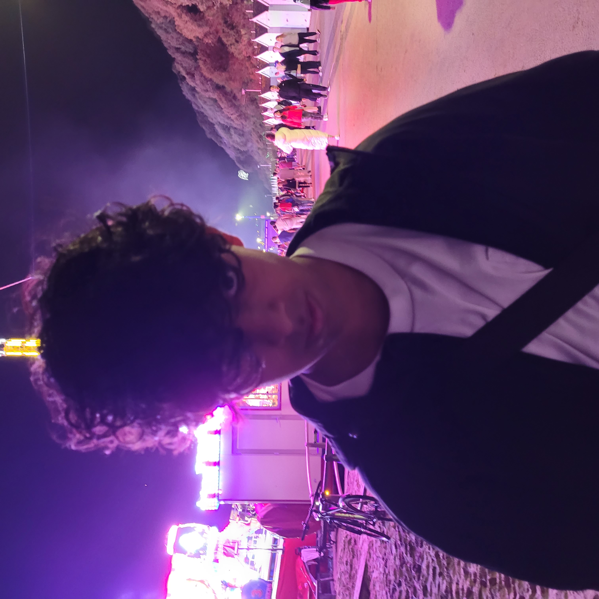

About Me
I'm Noyal, a Cyber Security student at Bournemouth University. My skills span the digital spectrum, from coding in HTML, CSS, Java, and JavaScript to photography, video editing, graphics design, and 3D modeling. I'm on a quest for knowledge, seeking to merge my technical expertise with creative insights to navigate the ever-evolving world of technology and cybersecurity.